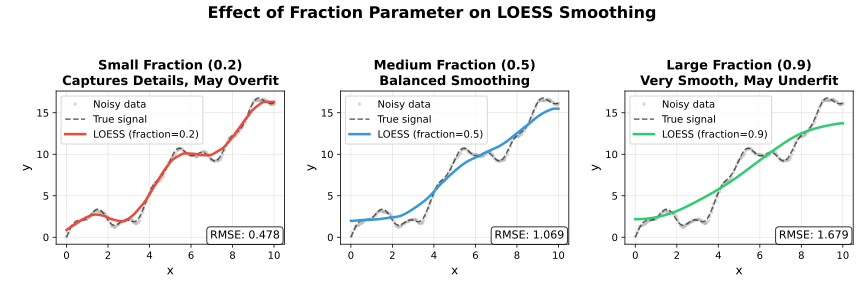
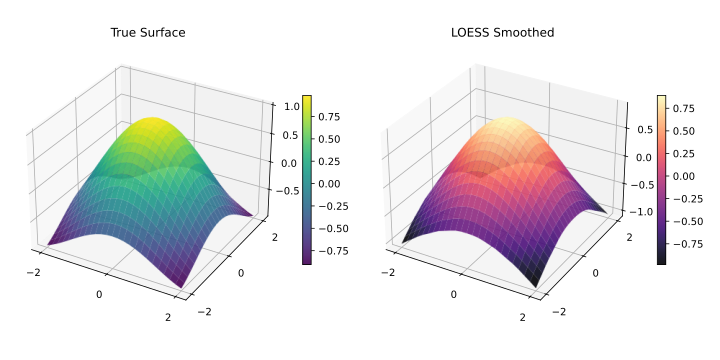
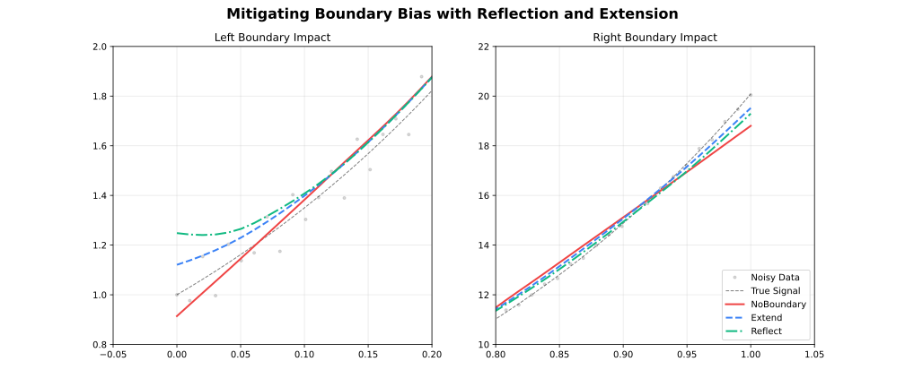
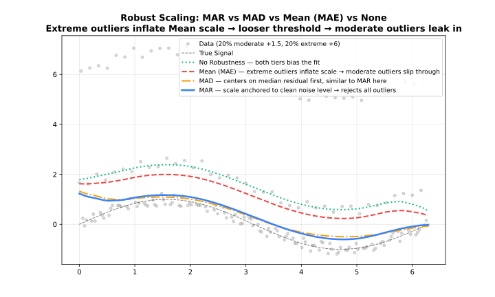
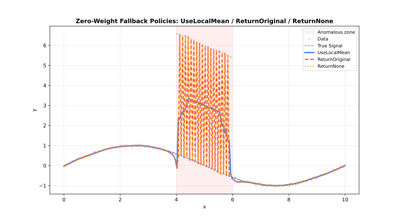

<!– markdownlint-disable MD024 MD033 –>
Parameters
Complete reference for all LOESS configuration options.
Quick Reference
| Parameter | Default | Range/Options | Description | Adapter |
|---|---|---|---|---|
| fraction | 0.67 | (0, 1] | Smoothing span | All |
| iterations | 3 | [0, 1000] | Robustness iterations | All |
| degree | 1 | 0–4 | Polynomial degree | All |
| surface_mode | "interpolation" | 2 options | Fit vs interpolate | All |
| weight_function | "tricube" | 7 options | Distance kernel | All |
| robustness_method | "bisquare" | 3 options | Outlier weighting | All |
| zeroweightfallback | "use_local_mean" | 3 options | Zero-weight behavior | All |
| boundary_policy | "extend" | 4 options | Edge handling | All |
| scaling_method | "mad" | 3 options | Scale estimation | All |
| auto_converge | nothing | tolerance | Early stopping | All |
| parallel | true (false for Online) | logical | Multi-threaded execution | All |
| custom_weights | nothing | positive | Per-observation weights | Batch |
| return_residuals | false | logical | Include residuals | All |
| returnrobustnessweights | false | logical | Include weights | All |
| return_diagnostics | false | logical | Include metrics | All |
| confidence_intervals | nothing | (0, 1) | CI level | Batch |
| prediction_intervals | nothing | (0, 1) | PI level | Batch |
| distance_metric | "normalized" | string option | Distance metric | All |
| weightedmetricweights | nothing | numeric | Per-dimension distance weights | All |
| cell | nothing | (0, ∞) | Interpolation cell size | All |
| interpolation_vertices | nothing | integer | Interpolation grid vertices | All |
| boundarydegreefallback | false | logical | Degree fallback at boundaries | All |
| cv_method | nothing | method | Auto-select fraction | Batch |
| cv_k | 5 | [2, ∞) | K-fold count | Batch |
| cv_fractions | nothing | numeric | Fractions to evaluate | Batch |
| cv_seed | nothing | integer | CV fold randomization seed | Batch |
| cross_validate | — | method | Auto-select fraction (cv_method + cv_k + cv_fractions + cv_seed) | Batch |
| chunk_size | 5000 | [10, ∞) | Points per chunk | Streaming |
| overlap | 500 | [0, chunk) | Overlap between chunks | Streaming |
| merge_strategy | "weighted_average" | 4 options | Merge overlaps | Streaming |
| window_capacity | 1000 | [3, ∞) | Max window size | Online |
| min_points | 3 | [2, window] | Min before output | Online |
| update_mode | "incremental" | 2 options | Update strategy | Online |
In Rust, pass option-like parameters as strings (case-insensitive), e.g. "tricube", "bisquare", "extend", "weighted_average". For the weighted distance metric, use .distance_metric("weighted").weighted_metric_weights(vec![...]).
Parameter Options Summary
| Parameter | Available Options |
|---|---|
| weight_function | "tricube", "epanechnikov", "gaussian", "biweight", "cosine", "triangle", "uniform" |
| robustness_method | "bisquare", "huber", "talwar" |
| zeroweightfallback | "use_local_mean", "return_original", "return_none" |
| boundary_policy | "extend", "reflect", "zero", "noboundary" |
| scaling_method | "mad", "mar", "mean" |
| surface_mode | "interpolation", "direct" |
| distance_metric | "normalized", "euclidean", "manhattan", "chebyshev", "minkowski:p", "weighted" |
| merge_strategy | "average", "weighted_average", "take_first", "take_last" |
| update_mode | "incremental", "full" |
Core Parameters
fraction
The proportion of data used for each local fit. Most important parameter.
| Value | Effect | Use Case |
|---|---|---|
| 0.1–0.3 | Fine detail | Rapidly changing signals |
| 0.3–0.5 | Balanced | General purpose |
| 0.5–0.7 | Heavy smoothing | Noisy data |
| 0.7–1.0 | Very smooth | Trend extraction |

using FastLOESS
using Random, Statistics
rng = MersenneTwister(42)
x = collect(range(0, 2π, length=100))
y = sin.(x) .+ randn(rng, 100) .* 0.3
model = Loess(; fraction=0.3)
result = fit(model, x, y)
println("First smoothed value (fraction=0.3): ", result.y[1])iterations
Number of robustness iterations for outlier resistance.
| Value | Effect | Performance |
|---|---|---|
| 0 | No robustness | Fastest |
| 1–3 | Moderate | Recommended |
| 4–6 | Strong | Contaminated data |
| 7+ | Very strong | Heavy outliers |
using FastLOESS
using Random, Statistics
rng = MersenneTwister(42)
x = collect(range(0, 2π, length=100))
y = sin.(x) .+ randn(rng, 100) .* 0.3
model = Loess(; iterations=5)
result = fit(model, x, y)
println("First smoothed value (iterations=5): ", result.y[1])degree
Polynomial degree for the local regression fits.

| Degree | Fit Type |
|---|---|
0 | Local constant |
1 | Local linear (Default) |
2 | Local quadratic |
3 | Local cubic |
4 | Local quartic |
Higher degrees capture curvature but can overfit with small fractions. Degree 1 is appropriate for most use cases.
See Polynomial Degree for a detailed comparison.
surface_mode
Controls whether the local polynomial is evaluated at every query point or at a sparser grid of anchor vertices with Hermite cubic interpolation in between.
| Mode | Behavior | Speed | Accuracy |
|---|---|---|---|
"interpolation" (default) | Evaluate at vertices, interpolate between | Faster | Slight approximation |
"direct" | Evaluate at every query point | Slower | Full precision |
See Polynomial Degree for a visual comparison.
using FastLOESS
using Random, Statistics
rng = MersenneTwister(42)
x = collect(range(0, 2π, length=100))
y = sin.(x) .+ randn(rng, 100) .* 0.3
model = Loess(; surface_mode="direct")
result = fit(model, x, y)
println("First smoothed value (direct surface mode): ", result.y[1])cell
Cell size for the interpolation grid. Controls the density of anchor vertices when surface_mode = "interpolation". Smaller values produce a finer grid, increasing accuracy at the cost of memory and computation.
- Default:
0.2(20% of x-range per dimension) - Range:
(0, ∞)— values close to 0 approach"direct"accuracy - Adapter: All
cell | Grid density | Accuracy | Speed |
|---|---|---|---|
0.05 | Very fine | Highest | Slowest |
0.2 | Moderate (default) | High | Fast |
0.5 | Coarse | Lower | Faster |
using FastLOESS
using Random, Statistics
rng = MersenneTwister(42)
x = collect(range(0, 2π, length=100))
y = sin.(x) .+ randn(rng, 100) .* 0.3
model = Loess(; cell=0.05)
result = fit(model, x, y)
println("First smoothed value (cell=0.05, very fine grid): ", result.y[1])interpolation_vertices
Explicitly set the number of anchor vertices for the interpolation grid, overriding the cell-based automatic count. Use when you need a precise vertex budget.
- Default: auto (derived from
celland data range) - Adapter: All
using FastLOESS
using Random, Statistics
rng = MersenneTwister(42)
x = collect(range(0, 2π, length=100))
y = sin.(x) .+ randn(rng, 100) .* 0.3
model = Loess(; interpolation_vertices=50)
result = fit(model, x, y)
println("First smoothed value (interpolation_vertices=50): ", result.y[1])dimensions
Number of predictor variables. Enables multivariate LOESS over an n-dimensional input space.

- 1 (default): Standard 1D smoothing over a single predictor
- 2: Spatial or bi-predictor surface smoothing
- 3+: High-dimensional local regression
See Multivariate LOESS for detailed usage and distance metric options.
distancemetric / weightedmetric_weights
Distance metric for neighbourhood calculation. Only meaningful when dimensions > 1. The "weighted" metric lets you assign per-dimension importance via weighted_metric_weights.
| Metric | Description |
|---|---|
"normalized" | Each dimension scaled to unit range (default) |
"euclidean" | Raw Euclidean distance |
"manhattan" | City-block distance |
"chebyshev" | Maximum coordinate difference |
"minkowski:p" | Generalised $L_p$ norm — e.g. "minkowski:3" |
"weighted" | Weighted Euclidean — set weighted_metric_weights to one weight per dimension |
using FastLOESS
using Random, Statistics
rng = MersenneTwister(42)
x = collect(range(0, 2π, length=100))
y = sin.(x) .+ randn(rng, 100) .* 0.3
x2d = hcat(x, x.^2 ./ (2π)^2)
model = Loess(;
dimensions=2,
distance_metric="weighted",
weighted_metric_weights=[2.0, 0.5]
)
result = fit(model, x2d, y)
println("First smoothed value (weighted distance metric, 2D): ", result.y[1])weight_function
Distance weighting kernel for local fits.
| Kernel | Efficiency | Smoothness |
|---|---|---|
"tricube" | 0.998 | Very smooth |
"epanechnikov" | 1.000 | Smooth |
"gaussian" | 0.961 | Infinite |
"biweight" | 0.995 | Very smooth |
"cosine" | 0.999 | Smooth |
"triangle" | 0.989 | Moderate |
"uniform" | 0.943 | None |
See Weight Functions for detailed comparison.
using FastLOESS
using Random, Statistics
rng = MersenneTwister(42)
x = collect(range(0, 2π, length=100))
y = sin.(x) .+ randn(rng, 100) .* 0.3
model = Loess(; weight_function="epanechnikov")
result = fit(model, x, y)
println("First smoothed value (epanechnikov kernel): ", result.y[1])robustness_method
Method for downweighting outliers during iterative refinement.
| Method | Behavior | Use Case |
|---|---|---|
"bisquare" | Smooth downweighting | General-purpose |
"huber" | Linear beyond threshold | Moderate outliers |
"talwar" | Hard threshold (0 or 1) | Extreme contamination |
See Robustness for detailed comparison.
using FastLOESS
using Random, Statistics
rng = MersenneTwister(42)
x = collect(range(0, 2π, length=100))
y = sin.(x) .+ randn(rng, 100) .* 0.3
model = Loess(; robustness_method="talwar")
result = fit(model, x, y)
println("First smoothed value (talwar robustness): ", result.y[1])boundary_policy
Edge handling strategy to reduce boundary bias. See Boundary Handling for a detailed comparison.

| Policy | Behavior | Use Case |
|---|---|---|
"extend" | Pad with first/last values | Most cases (default) |
"reflect" | Mirror data at boundaries | Periodic/symmetric data |
"zero" | Pad with zeros | Data approaches zero |
"noboundary" | No padding | Original Cleveland behavior |
For example:
using FastLOESS
using Random, Statistics
rng = MersenneTwister(42)
x = collect(range(0, 2π, length=100))
y = sin.(x) .+ randn(rng, 100) .* 0.3
model = Loess(; boundary_policy="reflect")
result = fit(model, x, y)
println("First smoothed value (reflect boundary): ", result.y[1])boundarydegreefallback
When enabled, the polynomial degree is automatically reduced to the highest degree that can be stably estimated for points near the boundary (where the local neighbourhood is one-sided). Prevents numerical failures when degree ≥ 2 at the edges.
- Default:
false - Adapter: All
Enable this if you observe NaN values or instability at the edges of your data when using degree = "quadratic" or higher.
using FastLOESS
using Random, Statistics
rng = MersenneTwister(42)
x = collect(range(0, 2π, length=100))
y = sin.(x) .+ randn(rng, 100) .* 0.3
model = Loess(; degree="quadratic", boundary_degree_fallback=true)
result = fit(model, x, y)
println("First smoothed value (quadratic degree, boundary fallback): ", result.y[1])scaling_method
Method for estimating residual scale during robustness iterations. See Scaling Methods for a detailed comparison.

| Method | Description | Robustness |
|---|---|---|
"mad" | Median Absolute Deviation | Very robust |
"mar" | Median Absolute Residual | Robust |
"mean" | Mean Absolute Residual | Less robust |
For example:
using FastLOESS
using Random, Statistics
rng = MersenneTwister(42)
x = collect(range(0, 2π, length=100))
y = sin.(x) .+ randn(rng, 100) .* 0.3
model = Loess(; scaling_method="mad")
result = fit(model, x, y)
println("First smoothed value (MAD scaling): ", result.y[1])zeroweightfallback
Behavior when all neighborhood weights are zero.

| Option | Behavior |
|---|---|
"use_local_mean" | Use mean of neighborhood (default) |
"return_original" | Return original y value |
"return_none" | Return NaN |
For example:
using FastLOESS
using Random, Statistics
rng = MersenneTwister(42)
x = collect(range(0, 2π, length=100))
y = sin.(x) .+ randn(rng, 100) .* 0.3
model = Loess(; zero_weight_fallback="use_local_mean")
result = fit(model, x, y)
println("First smoothed value (use_local_mean fallback): ", result.y[1])auto_converge
Enable early stopping when robustness weights stabilize.
using FastLOESS
using Random, Statistics
rng = MersenneTwister(42)
x = collect(range(0, 2π, length=100))
y = sin.(x) .+ randn(rng, 100) .* 0.3
model = Loess(; iterations=20, auto_converge=1e-6)
result = fit(model, x, y)
println("First smoothed value (auto_converge=1e-6): ", result.y[1])parallel
Enable multi-threaded parallel execution via Rayon. Substantially speeds up fitting on datasets with more than a few hundred points.
- Default:
truefor Batch and Streaming;falsefor Online - Adapter: All
OnlineLoess defaults to false because it fits one point at a time. Each update touches only the sliding window, so there is no inner loop large enough to benefit from parallelism — enabling it would add thread overhead with no gain.
Set to false for fully deterministic, reproducible output when debugging, or in environments where thread safety is required.
using FastLOESS
using Random, Statistics
rng = MersenneTwister(42)
x = collect(range(0, 2π, length=100))
y = sin.(x) .+ randn(rng, 100) .* 0.3
model = Loess(; parallel=false)
result = fit(model, x, y)
println("First smoothed value (parallel=false): ", result.y[1])custom_weights
Per-observation weights applied before distance and robustness weighting. Only available in the Batch adapter.
See Custom Weights for a full discussion.
using FastLOESS
using Random, Statistics
rng = MersenneTwister(42)
x = collect(range(0, 2π, length=100))
y = sin.(x) .+ randn(rng, 100) .* 0.3
weights = ones(length(y))
weights[5] = 0.0 # Exclude 5th point
model = Loess()
result = fit(model, x, y; custom_weights=weights)
println("First smoothed value (custom weights, index 5 excluded): ", result.y[1])Output Options
return_residuals
Include residuals (y - smoothed) in the output.
using FastLOESS
using Random, Statistics
rng = MersenneTwister(42)
x = collect(range(0, 2π, length=100))
y = sin.(x) .+ randn(rng, 100) .* 0.3
model = Loess(; return_residuals=true)
result = fit(model, x, y)
println("Residuals: ", result.residuals)return_diagnostics
Include fit quality metrics (Batch and Streaming only).
| Metric | Description |
|---|---|
rmse | Root Mean Square Error |
mae | Mean Absolute Error |
r_squared | R² coefficient |
residual_sd | Residual standard deviation |
effective_df | Effective degrees of freedom |
aic | Akaike Information Criterion |
aicc | Corrected AIC |
using FastLOESS
using Random, Statistics
rng = MersenneTwister(42)
x = collect(range(0, 2π, length=100))
y = sin.(x) .+ randn(rng, 100) .* 0.3
model = Loess(; return_diagnostics=true)
result = fit(model, x, y)
println("R\u00b2: ", result.diagnostics.r_squared)returnrobustnessweights
Include final robustness weights (useful for outlier detection).
using FastLOESS
using Random, Statistics
rng = MersenneTwister(42)
x = collect(range(0, 2π, length=100))
y = sin.(x) .+ randn(rng, 100) .* 0.3
model = Loess(; iterations=3, return_robustness_weights=true)
result = fit(model, x, y)
# Points with result.robustness_weights < 0.5 are likely outliers
println("First smoothed value (robustness weights computed): ", result.y[1])confidenceintervals / predictionintervals
Request uncertainty estimates (Batch only).
See Intervals for detailed usage.
using FastLOESS
using Random, Statistics
rng = MersenneTwister(42)
x = collect(range(0, 2π, length=100))
y = sin.(x) .+ randn(rng, 100) .* 0.3
model = Loess(; confidence_intervals=0.95, prediction_intervals=0.95)
result = fit(model, x, y)
println("First smoothed value (95% CI + PI): ", result.y[1])CV Methods
cv_method
Selection strategy for automated parameter tuning.
| Method | Description | Speed |
|---|---|---|
"kfold" | K-Fold Cross-Validation | Fast |
"loocv" | Leave-One-Out Cross-Validation | Slow |
using FastLOESS
using Random, Statistics
rng = MersenneTwister(42)
x = collect(range(0, 2π, length=100))
y = sin.(x) .+ randn(rng, 100) .* 0.3
model = Loess(; cv_method="kfold", cv_k=5)
result = fit(model, x, y)
println("First smoothed value (k-fold CV, k=5): ", result.y[1])Adapter Parameters
chunk_size
Points per chunk in Streaming mode.
using FastLOESS
using Random, Statistics
rng = MersenneTwister(42)
x = collect(range(0, 2π, length=100))
y = sin.(x) .+ randn(rng, 100) .* 0.3
model = StreamingLoess(; chunk_size=10000)
process_chunk(model, x, y)
result = finalize(model)
println("First smoothed value (chunk_size=10000): ", result.y[1])overlap
Overlap between chunks in Streaming mode.
using FastLOESS
using Random, Statistics
rng = MersenneTwister(42)
x = collect(range(0, 2π, length=100))
y = sin.(x) .+ randn(rng, 100) .* 0.3
model = StreamingLoess(; overlap=1000)
process_chunk(model, x, y)
result = finalize(model)
println("First smoothed value (overlap=1000): ", result.y[1])merge_strategy
Method for merging overlapping chunks. See Merge Strategies for a detailed comparison.
| Strategy | Description | Robustness |
|---|---|---|
"average" | Average of overlapping chunks | Fastest, least robust |
"take_first" | Left chunk only | Fastest, least robust |
"take_last" | Right chunk only | Fastest, least robust |
"weighted_average" | Weighted average of overlapping chunks | Most robust |
For example:
using FastLOESS
using Random, Statistics
rng = MersenneTwister(42)
x = collect(range(0, 2π, length=100))
y = sin.(x) .+ randn(rng, 100) .* 0.3
model = StreamingLoess(; merge_strategy="weighted_average")
process_chunk(model, x, y)
result = finalize(model)
println("First smoothed value (weighted_average merge): ", result.y[1])window_capacity
Maximum points held in memory for Online mode.
using FastLOESS
using Random, Statistics
rng = MersenneTwister(42)
x = collect(range(0, 2π, length=100))
y = sin.(x) .+ randn(rng, 100) .* 0.3
model = OnlineLoess(; window_capacity=500)
result = add_point(model, x[1], y[1]) # nothing until window fills
println("Result before window fills (capacity=500): ", result)min_points
Minimum points required before Online filter starts producing outputs.
using FastLOESS
using Random, Statistics
rng = MersenneTwister(42)
x = collect(range(0, 2π, length=100))
y = sin.(x) .+ randn(rng, 100) .* 0.3
model = OnlineLoess(; min_points=10)
result = add_point(model, x[1], y[1]) # nothing until 10 points seen
println("Result before min_points reached (min_points=10): ", result)update_mode
Optimization strategy for Online mode updates.
| Mode | Description | Speed |
|---|---|---|
"full" | Re-smooth entire window | Slow |
"incremental" | Update only affected fits | Fast |
For example:
using FastLOESS
using Random, Statistics
rng = MersenneTwister(42)
x = collect(range(0, 2π, length=100))
y = sin.(x) .+ randn(rng, 100) .* 0.3
model = OnlineLoess(; update_mode="full")
result = add_point(model, x[1], y[1])
println("Result after first point (update_mode=full): ", result)